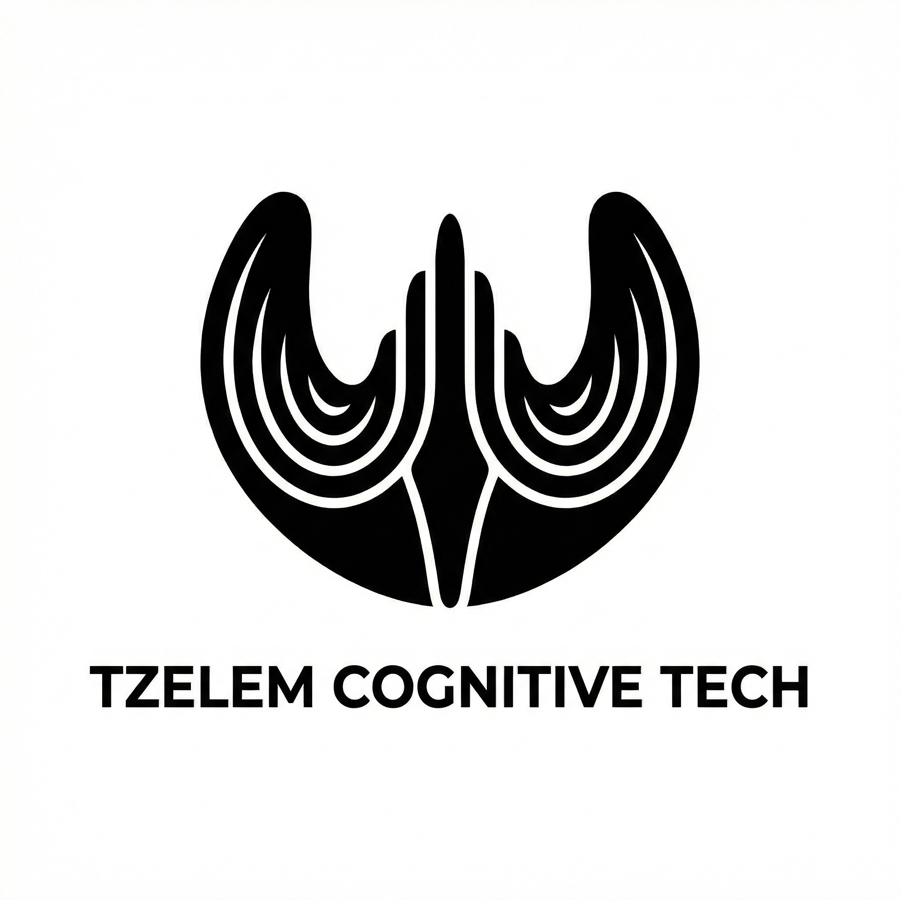
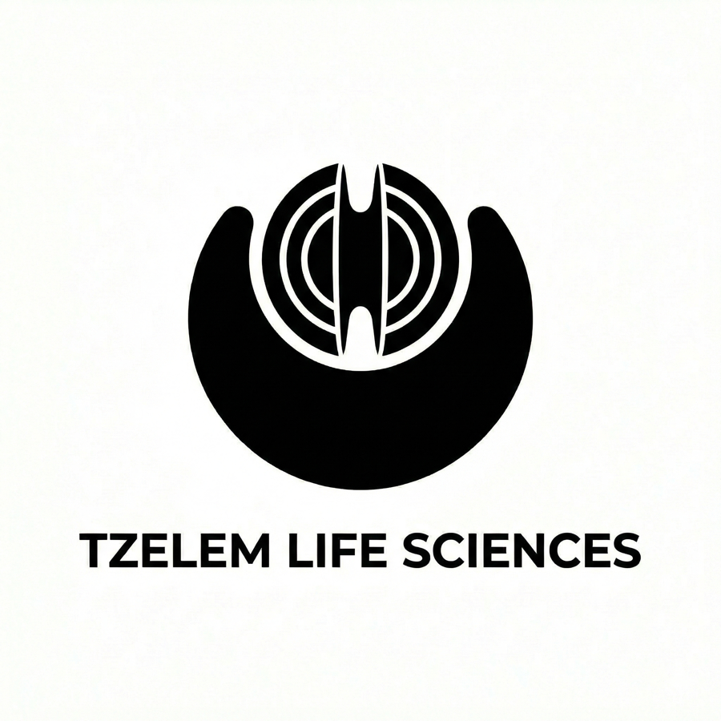
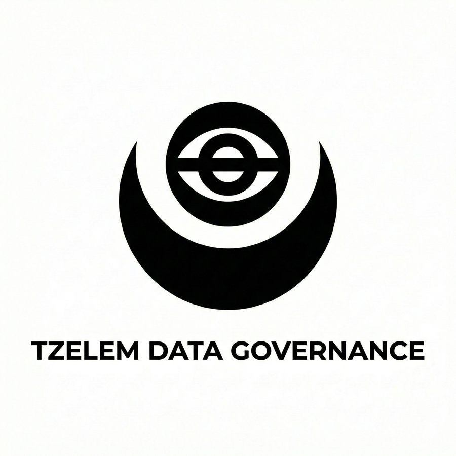
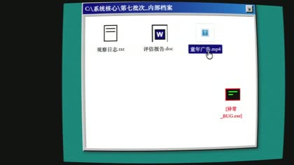
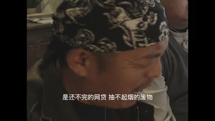
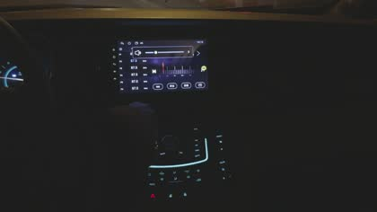

昃伦认知科技
虚拟现实、梦境构建、意识上传。它提供比现实更温柔的牢笼，也负责给遗憾补一层滤镜。
- Project Awakener // 醒梦人
- Project Nostalgia // 杀马特
- Project Inception // 蝴蝶梦
- Project Sunrise // 看日出
昃伦不直接制造“恐怖”。它制造解决方案：帮人类删除痛苦、修正缺陷、整理真相。 异常发生在解决方案失控之后。

虚拟现实、梦境构建、意识上传。它提供比现实更温柔的牢笼，也负责给遗憾补一层滤镜。

基因编辑、辅助生殖、代谢修正。它把身体当成容器，把出生权当成筛选结果。

全域监控、舆情清洗、历史修正。它不争辩真相，只决定哪些真相允许被看见。
从抽帧与字幕中抽出的证据点，将正片里的零散异常拼成一张企业项目图谱。 这页可以作为后续解谜 H5 的第一层“真相板”。

童年模拟器不是游戏，而是出生前的压力测试：只保留最优数据，只接受完美模板。

2007 年被做成可回访的情感代餐，数据被赋予生命，遗憾被包装成一次重逢。
推送、旁白、误会与窥视形成闭环。系统不只是观察情绪，它诱导情绪走向。

蝶泉中心与昃伦生命科学相连。所谓营养剂，也许是维持变异后的生命体征。
这一层适合后续做成互动：用户每点开一条异常，系统都会给出一份“企业处理意见”， 表面是公关话术，背后是灭证流程。
真正的慈悲，不是给予选择，而是剥夺选择的必要。 当生命、记忆与真相被精准安排好，凡人便不必再承担自由意志带来的痛苦。